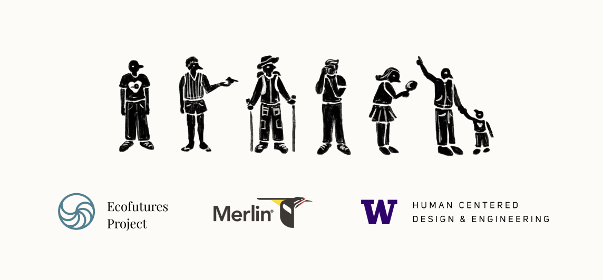
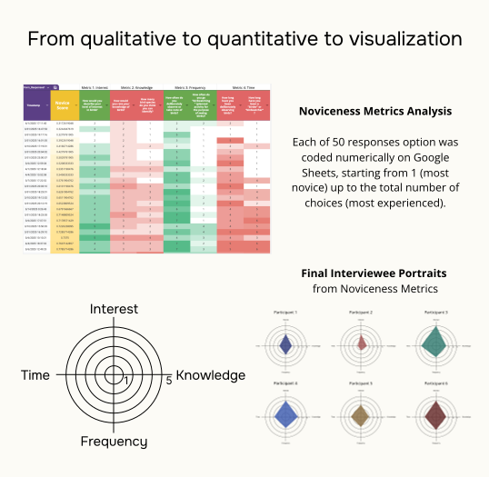
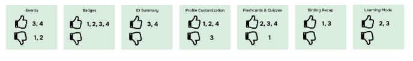

Role
UX Research Lead & UX Designer
Owned the noviceness metric, research synthesis, design framing, and report-to-concept translation.
“Novice” was not one user type, so Merlin needed adaptable support for different beginner goals, confidence levels, and learning contexts.
UX Research Lead & UX Designer
Owned the noviceness metric, research synthesis, design framing, and report-to-concept translation.
Jan-Jun 2025
6-month sponsored HCDE capstone
4 designers and researchers
Collaborative research, testing, redesign, and final report production.

Merlin Bird ID is a free bird identification app from the Cornell Lab of Ornithology with more than 3M active users. Before designing features, I helped the team define what “novice” meant in this context: someone might like birds, recognize common species, use Merlin often, and still lack confidence in the field.
My research question
How might we design Merlin Bird ID as a companion app for young, novice birdwatchers that encourages regular engagement and long-term environmentally conscious behavior?
I built the novice metric approach used to screen and compare participants. That work connected quantitative survey responses to interview selection and later helped us interpret qualitative differences between novice birders.
Our team delivered a research report and Merlin redesign concepts. I also designed the capstone poster, but the main project output was the research-backed redesign direction for supporting novice birdwatchers.
Survey, field observations, and media review built a first profile of “young novice birder.”
Survey scores shaped interviewee selection and gave us a demographic spread to compare.
Interview and shadowing data turned the numeric score into a richer view of novice behavior.
The research method started with a structured survey, but the survey was not only for recruitment. I used it to build a working measure of noviceness, select interviewees with more intention, and create a baseline that we could later challenge through interviews, shadowing, coding, and affinity mapping.

I broke noviceness into interest, knowledge, frequency, and time spent birdwatching, so we were not relying on a vague beginner label.
Each dimension contributed equally to the novice score. When one dimension had multiple questions, the weight was split across sub-questions.
We prioritized lower novice-score participants who were Seattle-based, aged 18-40, available in person, and open to reflective conversation.
Six 90-120 minute interviews helped us understand what the score could not show: confidence, social context, tool access, and invisible knowledge gaps.
Outdoor shadowing showed how participants noticed birds, used Merlin, asked questions, and reacted when identification became uncertain.
Transcript coding and affinity mapping turned individual stories into patterns, then pushed us to treat novice as a profile rather than a single ladder.

The metric was useful because it made our early decisions explicit, but it became more meaningful only after qualitative work complicated it. Interviews and shadowing showed that someone can be novice through knowledge, tools, confidence, identity, or community access. That shift shaped the rest of the project.
The score helped us find the sample; qualitative work explained the differences inside it. Some participants lacked tools, some lacked local birding knowledge, some lacked community confidence, and some had interest without identifying as birdwatchers. The key result was that “novice” became less of a level and more of a set of support needs.
Participants did not move from “new” to “expert” in the same order. One person might know local species but feel socially hesitant; another might use Merlin often but still lack confidence interpreting the result.
Instead of designing one beginner mode, we treated novice behavior as a mix of motivation, confidence, context, and identity. This gave us a stronger basis for deciding which support should be educational, social, or habit-building.
Badges and recaps responded to motivation, learning mode and ID summaries responded to knowledge gaps, and events responded to the need for low-pressure community entry points.
The types-of-novice map helped us show that beginners may be caretakers, nature lovers, photographers, companions, or curious learners. That made the redesign less about pushing users toward expertise and more about supporting different ways of belonging.

The redesign work was not a styling exercise. Each concept responded to a different support need we found in research: habit formation, birding basics, or social confidence.
Weekly challenges, badges, and birding recaps can encourage engagement without turning birding into a chore.
Learning mode, embedded tips, and ID summaries help new birders understand the world of birdwatching beyond a single match.
Events and shareable achievements create lightweight ways to build community without requiring Merlin to become a full social platform.


We tested the redesign concepts with four initial interviewees to see which ideas felt useful, desirable, and relevant to their birding style.
Feature directions such as events, badges, ID summaries, profile customization, flashcards, birding recaps, and learning mode.
Each tester preferred a different feature, and those choices matched their novice type and motivation.
Merlin should offer optional support paths instead of forcing every beginner through the same onboarding or learning flow.


The novice score helped us recruit with intention and make early research decisions visible. Interviews and shadowing then showed why the score alone was not enough: confidence, identity, tool access, and community access did not move in one neat line.
I would keep the metric pipeline: survey questions, numeric coding, weighted score, interview selection, then qualitative validation. It made our research decisions explicit.
I would treat noviceness less like one score and more like a profile. Interest, knowledge, frequency, time, tool access, and community confidence do not always move together. I would also separate the report narrative from showcase materials earlier, so the redesign rationale is easier to follow.